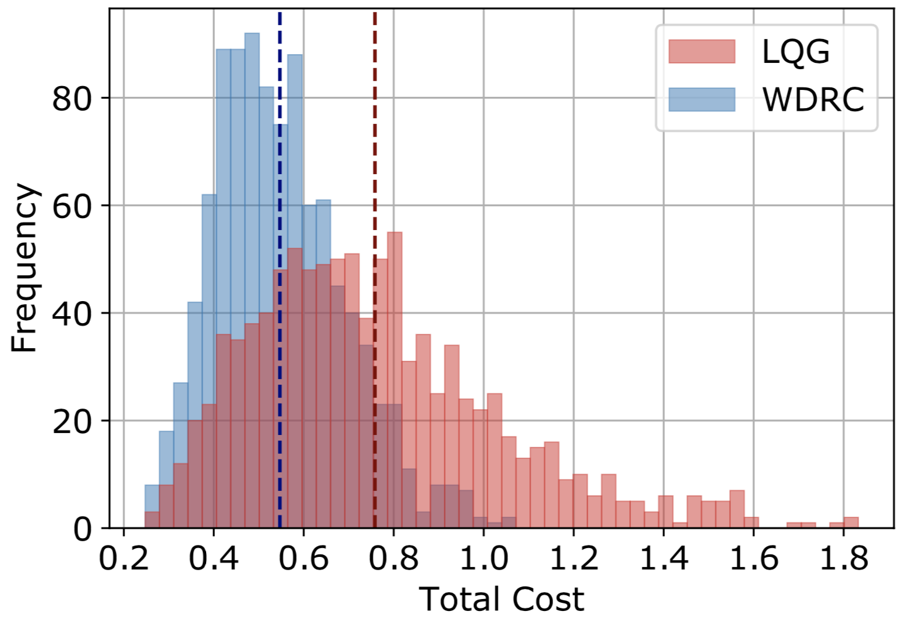

cdc22_2
Wasserstein distributionally robust control of partially observable linear systems: Tractable approximation and performance guarantee. Astghik Hakobyan, and Insoon Yang. IEEE Conference on Decision and Control (CDC), 2022.
cdc22_1
On affine policies for Wasserstein distributionally robust unit commitment. Youngchae Cho, and Insoon Yang. IEEE Conference on Decision and Control (CDC), 2022.

[CDC 2 papers] Distributionally robust partially observable control, Distributionally robust unit commitment
The papers “ Wasserstein distributionally robust control of partially observable linear systems: Tractable approximation and performance guarantee ” and “ On affine policies for Wasserstein distributionally robust unit commitment ” have been accepted to 2022 IEEE ...
ral22
Infusing model predictive control into meta-reinforcement learning for mobile robots in dynamic environments. Jaeuk Shin, Astghik Hakobyan, Mingyu Park, Yeoneung Kim, Gihun Kim, and Insoon Yang. IEEE Robotics and Automation Letters, vol. 7, no. 4, pp. ...
cta
On representation formulas for optimal control: A Lagrangian perspective. Yeoneung Kim, and Insoon Yang. IET Control Theory & Applications (CTA), accepted.